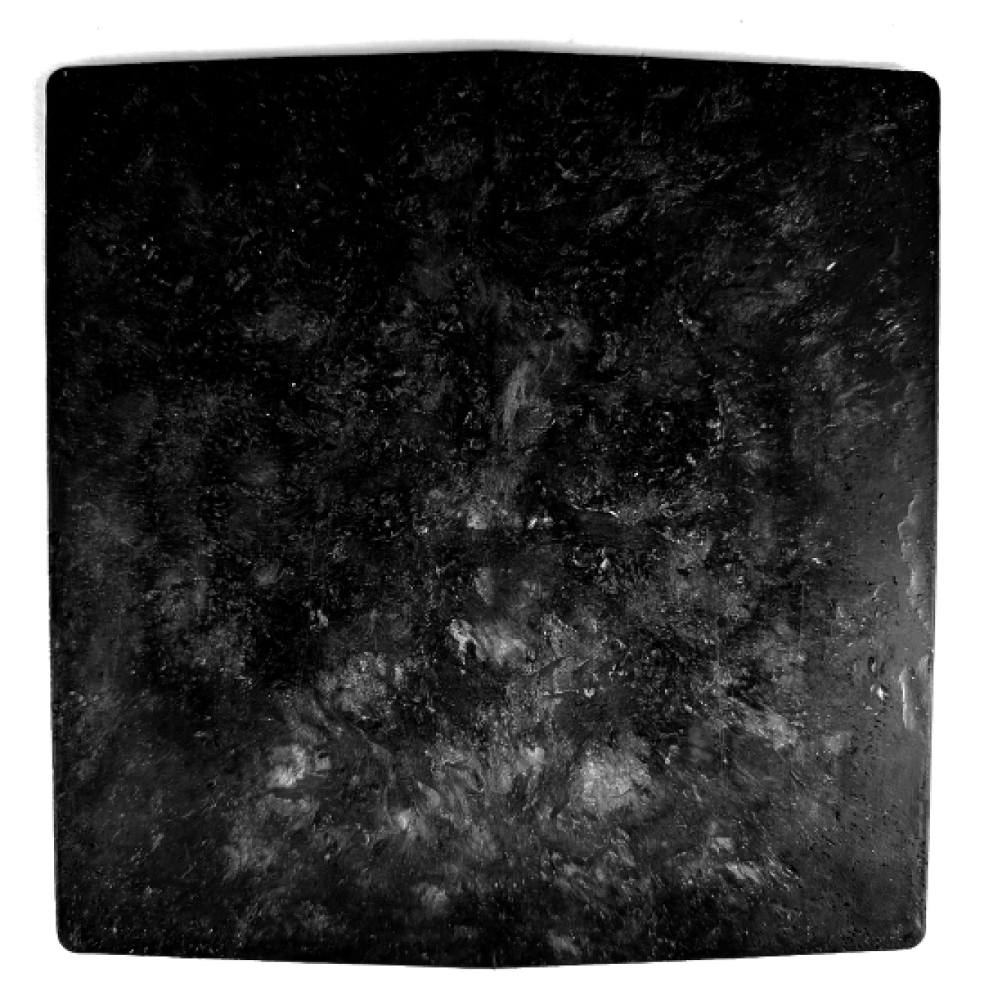
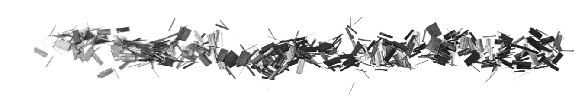

I. EXECUTIVE SUMMARY
HIGH-RATE PRODUCTION OF ISOTROPIC DARC COMPOSITES FOR ATTRITABLE SYSTEMS
The Department of War’s “Drone Dominance” initiative demands a radical shift in aerostructures: the transition from low-volume, high-touch manufacturing to high-rate, attritable production. Current airframe solutions, primarily machined aluminum and autoclave-dependent woven composites, cannot meet the dual requirements of a $2,300 unit cost and scalable US-based output.
BGS Engineering introduces DARC (Discontinuous Advanced Resin Composite), a proprietary material platform designed specifically for the next generation of loitering munitions and attritable systems. With a density of 1.37 g/cm³ and isotropic mechanical properties, DARC allows engineers to utilize high-pressure compression molding to replace complex machined components with a 40%-50% density reduction compared to aluminum.
Validated through ongoing collaboration with Sandia National Laboratories (SNL) and New Mexico State University (NMSU), DARC provides a sovereign, high-throughput solution that eliminates the autoclave bottleneck.
II. THE CAPABILITY GAP: THE COMPOSITE BOTTLENECK

To achieve the scale required for modern loitering munitions, the U.S. industrial base must produce hundreds of thousands of units. Traditional manufacturing presents three critical points of friction: The Anisotropic Constraint, The Autoclave Lifecycle, and Environmental Vulnerability.
III. MATERIAL SCIENCE & MANUFACTURING VELOCITY
DARC is engineered for isotropic performance and net-shape precision. By utilizing a high-pressure compression molding process, the material behaves predictably under load from any direction.
TECHNICAL NOTE: GEOMETRY VALIDATION (PATHFINDER UNIT) STATUS: DEPLOYED JAN 1, 2026
- Complex Geometry: Validates "Net-Shape" flow during consolidation.
- Hardware Integration: Successful use of molded-in threaded inserts.
- Real-World Evaluation: Monitoring surface durability and resin stability.
IV. INTRINSIC SURVIVABILITY & SIGNATURE MANAGEMENT

Integrated UV Resilience: Proprietary stabilizing chemistry is integrated throughout the matrix.
Intrinsic Conductivity: Enables EMI shielding and ESD protection without heavy metallic liners. Quantitative validation (ASTM D4935) is scheduled for Q1 2026.
V. OPERATIONAL SOVEREIGNTY & VI. CONCLUSION
BGS Engineering is transitioning from TRL 4 laboratory validation to a TRL 5/6 validation series scheduled for Q1 2026. We are currently selecting lead integration partners for the FY26 production ramp.